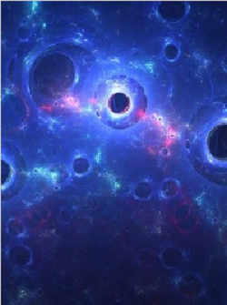
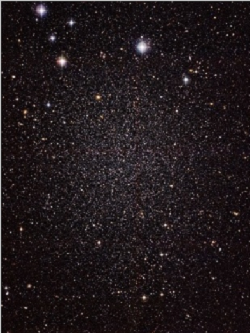

Dark Matter
Dark matter is a form of matter thought to account for approximately 85% of the matter in the universe and about a quarter of its total mass–energy density or about 2.241×10−27 kg/m3.

Stars
Stars are huge celestial bodies made mostly of hydrogen and helium that produce light and heat from the churning nuclear forges inside their cores. Aside from our sun, the dots of light we see in the sky are all light-years from Earth.

Gas and Dust
Much of the space between the stars is filled with atomic and molecular gas (primarily hydrogen and helium) and tiny pieces of solid particles or dust (composed mainly of carbon, silicon and oxygen).